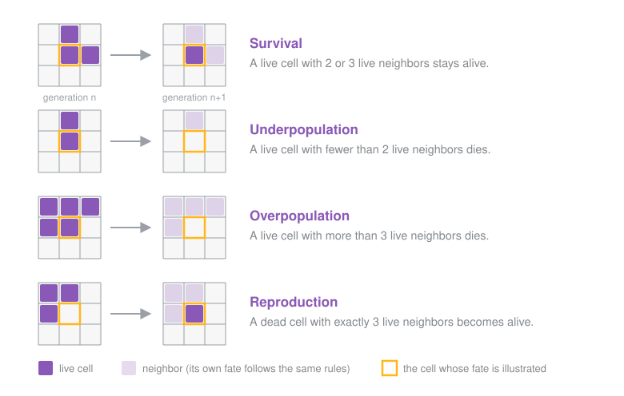
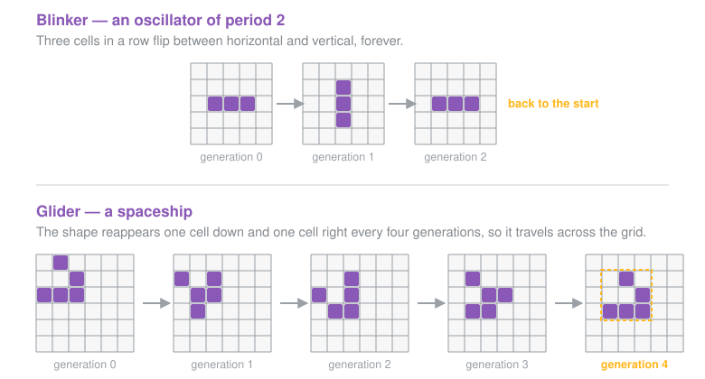

Phase 2 — Business logic#
Tip
A recurring pattern in real SAF solutions is: PyAnsys SDKs or in-house solvers do the work, SAF orchestrates them. The business logic is never written inside a SAF class — it lives in its own module so it can be unit tested, reused and swapped out independently. The Game of Life engine plays the role of “the solver” in this tutorial.
Conway’s Game of Life in a nutshell#
The Game of Life is a cellular automaton invented by mathematician John Conway in 1970. It is not a game you play, but rather a simulation you watch.
The universe is a 2D grid. Each cell is either alive or dead. Time advances in discrete generations, and the state of every cell at generation n+1 depends only on its eight surrounding neighbors at generation n:
Current cell state |
Live neighbors |
Next state |
|---|---|---|
Alive |
2 or 3 |
Alive (survival) |
Alive |
anything else |
Dead (under- or overpopulation) |
Dead |
exactly 3 |
Alive (reproduction) |
Dead |
anything else |
Dead |
{kind=link}

The same four rules, applied to the cell highlighted in gold.#
That is the entire rule set. Yet from those few lines emerge surprisingly rich behaviors, which is exactly why the Game of Life is famous. The initial configuration you seed the grid with determines everything that follows. Two families of starting patterns matter for this tutorial:
Oscillators return to their original shape after a fixed number of generations. The blinker (three cells in a row) flips between horizontal and vertical forever — period 2. The pulsar has period 3.
Spaceships translate across the grid as they evolve. The glider is the smallest one: it moves one cell diagonally every four generations.
{kind=link}

One pattern of each family, followed over a full period#
Where business logic belongs#
What matters is that business logic is grouped under the solution/ package, next to the
backend that orchestrates it. Beyond that, the layout is a convention, not a constraint:
Group the modules in a sub-package of your choosing —
solution/logic/,solution/solvers/, whatever reads best for your domain. This is what you do in this tutorial, withsolution/logic/.Or, for a very small solution, drop the modules at the root of
solution/, on the same level asdefinition.pyand the*_step.pymodules.
What is not negotiable is the separation between what the solution computes (the business
logic modules) and how it orchestrates the computation (the StepModel classes). That
split is one of the golden rules of the framework.
A business logic module is ordinary Python: functions and classes, no imports from SAF, no top-level side effects. That is what makes it testable on its own, reusable outside the solution, and safe to import from anywhere in the backend.
Note
There is one exception. When a solution uses the job submission API, the script or
module that runs on the execution node must live in solution/scripts/: that folder is
the source code transfer point between the solution and the job submission space. This is
outside the scope of this tutorial.
Get the engine#
You are not going to write the engine. It already exists, and it is not the most interesting part of this tutorial. Download it instead.
Practice
Open game_of_life.py on GitHub.
Click the Download raw file button in the top-right corner of the code view.
Create a
logicfolder insrc/saf/solutions/game_of_life/solution/, next todefinition.py, and move the downloadedgame_of_life.pyinto it.
What’s inside the module#
You do not need to read every line, but it helps to know the four objects it exposes. Only the last one is ever touched by the SAF backend.
Object |
Responsibility |
|---|---|
|
A |
|
The catalog of available patterns ( |
|
The pure computation. |
|
The stateful facade the backend actually uses: |
In practice, the whole backend interacts with the engine through four calls:
controller = SimulationController(grid_size=(20, 20))
controller.initialize("blinker") # seed the grid
controller.step_forward() # advance one generation
state = controller.get_current_state() # snapshot: grid, generation, live_cells
state.grid is a NumPy array of zeros and ones. state.live_cells is the population count,
which the backend uses to stop early when everything dies out.
Check that it works#
Business logic should always be verified before you wrap SAF around it. A broken engine buried under framework layers is far harder to debug than one caught by a two-line check.
The module ships a main() function for exactly that purpose: it seeds a 5x5 grid with the
blinker and prints the first two generations.
def main() -> None:
"""Run a standalone check of the engine.
Seeds a small grid with the blinker oscillator and prints the first two generations. The
blinker must flip from horizontal to vertical.
"""
controller = SimulationController(grid_size=(5, 5))
controller.initialize("blinker")
for _ in range(2):
state = controller.get_current_state()
print(f"Generation {state.generation} ({state.live_cells} live cells)")
print(state.grid)
print()
controller.step_forward()
Notice that the module never calls main() itself. Importing game_of_life executes
nothing, which is precisely what makes it safe for the backend to import later. To run the
check, write a short throwaway script that imports the function and calls it.
Practice
At the root of the
game-of-lifefolder, create a file namedcheck_engine.py:from saf.solutions.game_of_life.solution.logic.game_of_life import main main()
Run it inside the solution’s virtual environment:
saf execute "python check_engine.py"
You should see the blinker flip from horizontal to vertical:
Generation 0 (3 live cells)
[[0 0 0 0 0]
[0 0 0 0 0]
[0 1 1 1 0]
[0 0 0 0 0]
[0 0 0 0 0]]
Generation 1 (3 live cells)
[[0 0 0 0 0]
[0 0 1 0 0]
[0 0 1 0 0]
[0 0 1 0 0]
[0 0 0 0 0]]
If you see that, the engine is in place and phase 2 is done.
Tip
The check_engine.py file is a scratch file, not part of the solution. Delete it once the check passes, or keep it next to you while you develop — either way it never ships.
Key takeaways#
Important
Business logic lives under
solution/— outside any SAF class. Whether it sits at the root of the package or in a sub-package of your own is up to you.The only exception is the job submission API, which requires the module executed on the execution node to be placed in
solution/scripts/.A business logic module never imports SAF, Dash or
StepModel. That way the same code runs unchanged in a notebook, a script, a SAF backend or a batch job.Keep those modules free of top-level side effects so they are safe to import: expose a
main()function if you need a standalone check, but never call it at module level.Always verify the logic standalone before layering the SAF backend on top.
See Business logic for the full best-practice guide.